Bitácora de Laboratorio 2026
Maximiliano Lavetti — Alumno — 5to Año
Arquitectura y Componentes (PC Lavetti)
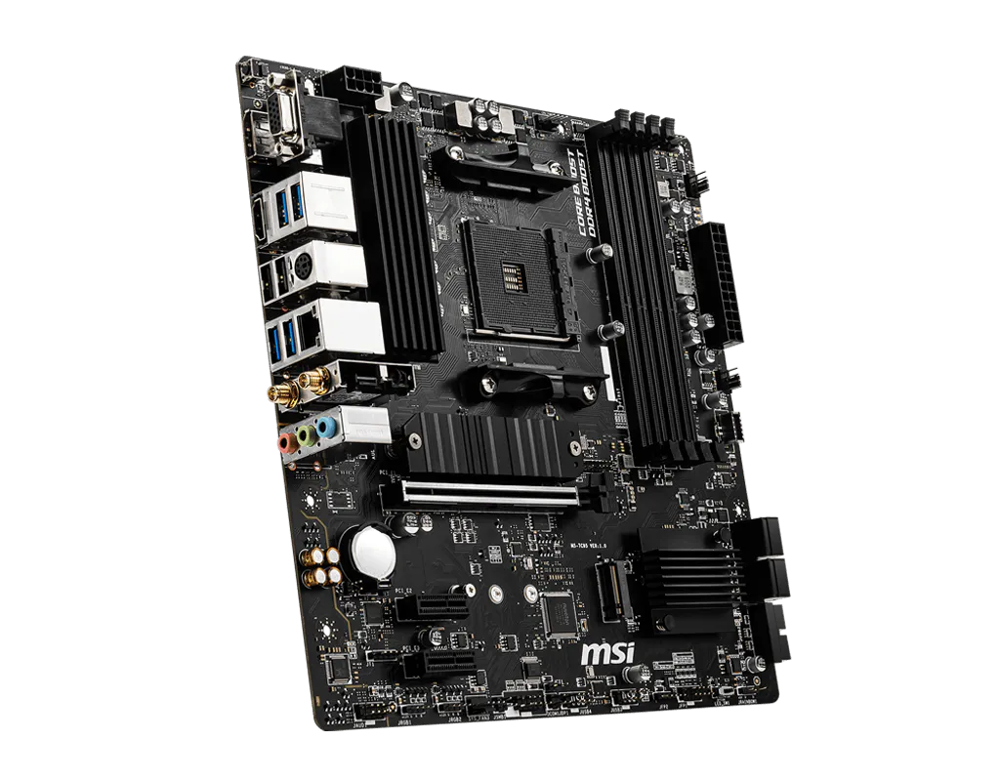
Placa Madre
Modelo: MSI B550M PRO-VDH WIFI
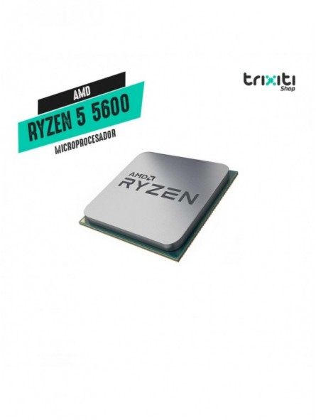
Microprocesador
Modelo: AMD Ryzen 5 5600
Arquitectura: 64 bits, x64

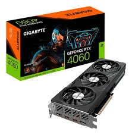
Tarjeta Gráfica (GPU)
Modelo: NVIDIA GeForce RTX 4060
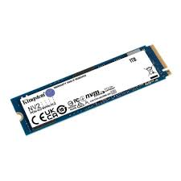
Almacenamiento
Tipo: SSD Kingston NV2 (M.2 NVMe)
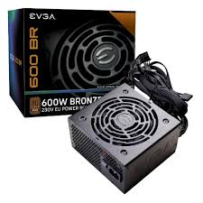
Fuente de Alimentación (PSU)
EVGA 600 BR 600W, 80+ Bronze
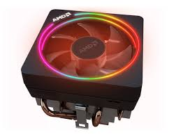
Sistema de Refrigeración
Cooler stock AMD Wraith Stealth
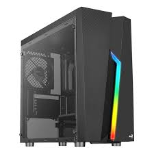
Gabinete (Chasis)
Aerocool Bolt Mini mATX
Investigación: Memoria RAM y Almacenamiento
Cómo la computadora maneja la información a corto y largo plazo.
🧠 Memoria RAM
Volatilidad, DDR4 vs DDR5, Dual Channel y latencias explicadas.
💾 Almacenamiento
HDD vs SSD SATA vs NVMe: velocidades, tecnologías y cuellos de botella.
Investigación: Tarjeta Gráfica (GPU)
La microcomputadora dedicada al procesamiento paralelo masivo.
🎮 GPU: Arquitectura y Tecnologías
Núcleos CUDA, VRAM, Ray Tracing, DLSS y por qué la GPU necesita su propia energía.
Investigación: Fuente de Alimentación y Gabinete
El corazón energético y el pulmón del sistema.
⚡ Fuente de Alimentación (PSU)
Conversión AC/DC, certificación 80 Plus y protecciones eléctricas OVP/SCP.
🖥️ Gabinete y Airflow
Flujo de aire, presión positiva y por qué el gabinete no es solo una caja de chapa.
Periféricos y Dispositivos E/S
Interfaces físicas de comunicación con el usuario.
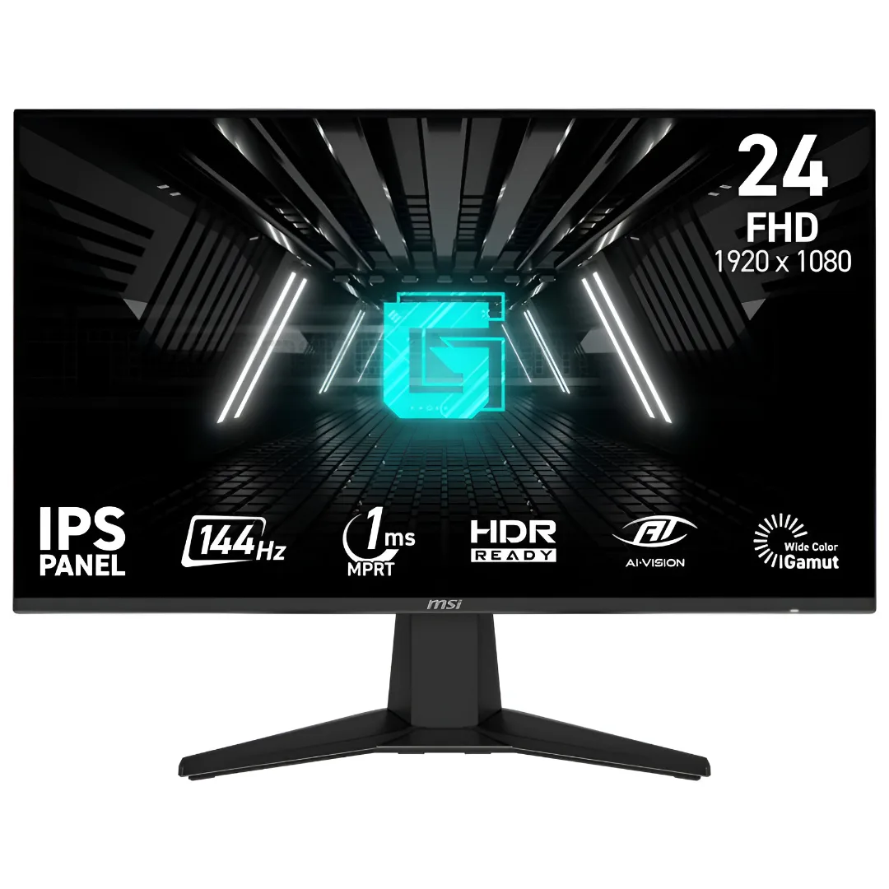
Monitor (Salida)
Resolución: 1920x1080 (Full HD) a 75Hz
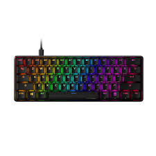
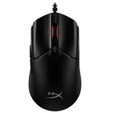
Teclado y Mouse (Entrada)
Conectividad: USB / Inalámbrico 2.4GHz
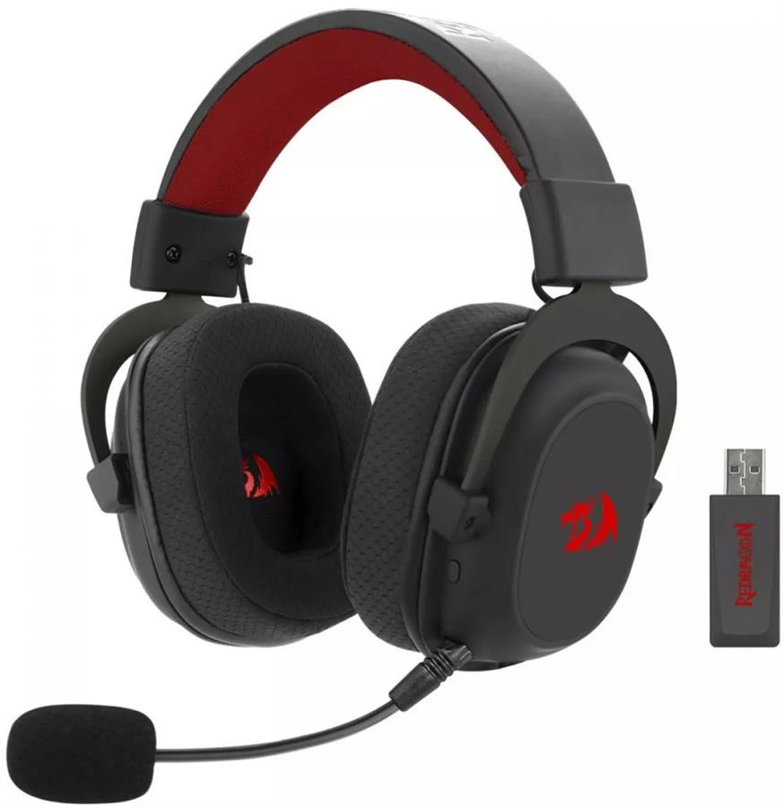
Auriculares (Salida/Entrada)
Modelo: Logitech Zone Vibe 125
Conectividad: Receptor USB-A / Bluetooth
Investigación Completa: Periféricos e Interfaces
Acceso al informe técnico sobre monitores, teclados, mouse, audio y estándares de conexión USB.
Simulación de Ensamblaje y Presupuestos
Cotizaciones armadas en Compragamer para dos perfiles de uso distintos.
Presupuesto Gama Baja
AMD Ryzen 5 5600GT, Mother B450M, SSD 512GB y Monitor 22" FHD. Equipo de entrada con buena relación precio-rendimiento.
Presupuesto Gama Alta
AMD Ryzen 9 7900, RTX 5070 Ti 16GB, SSD NVMe 2TB y triple monitor QHD 180Hz. Equipo de máximo rendimiento.
Laboratorio: Diagnóstico y Mantenimiento
Documentación técnica de los procedimientos realizados en el entorno de pruebas.

Soldadura y Recuperación
Prácticas de desoldadura de componentes y reparación de pistas en placas base averiadas.
Manual Técnico de Microsoldadura
Procedimientos detallados de microsoldadura sobre placa base: herramientas, técnicas y precauciones.
Leer Manual de MicrosoldaduraBase de Datos de Conocimiento (Teoría)
Acceso al informe técnico completo sobre funcionamiento interno, arquitectura de componentes y resolución de cuellos de botella.
Prácticas de Laboratorio Extra
Soldadura y Desoldadura
Recuperación de componentes electrónicos y reparación de pistas en placas de descarte.
Proyectos Arduino e IoT
Aplicación práctica de programación en C++ y electrónica para resolver problemas del mundo real.

Lentes Asistenciales
Hardware: Microcontrolador ESP32, Sensor Ultrasónico, Buzzer.
Lógica: Detección de proximidad y emisión de alertas sonoras.

Basurero Inteligente
Hardware: Placa Arduino, Servomotor, Sensor de Proximidad.
Lógica: Apertura automática del contenedor mediante detección de movimiento.